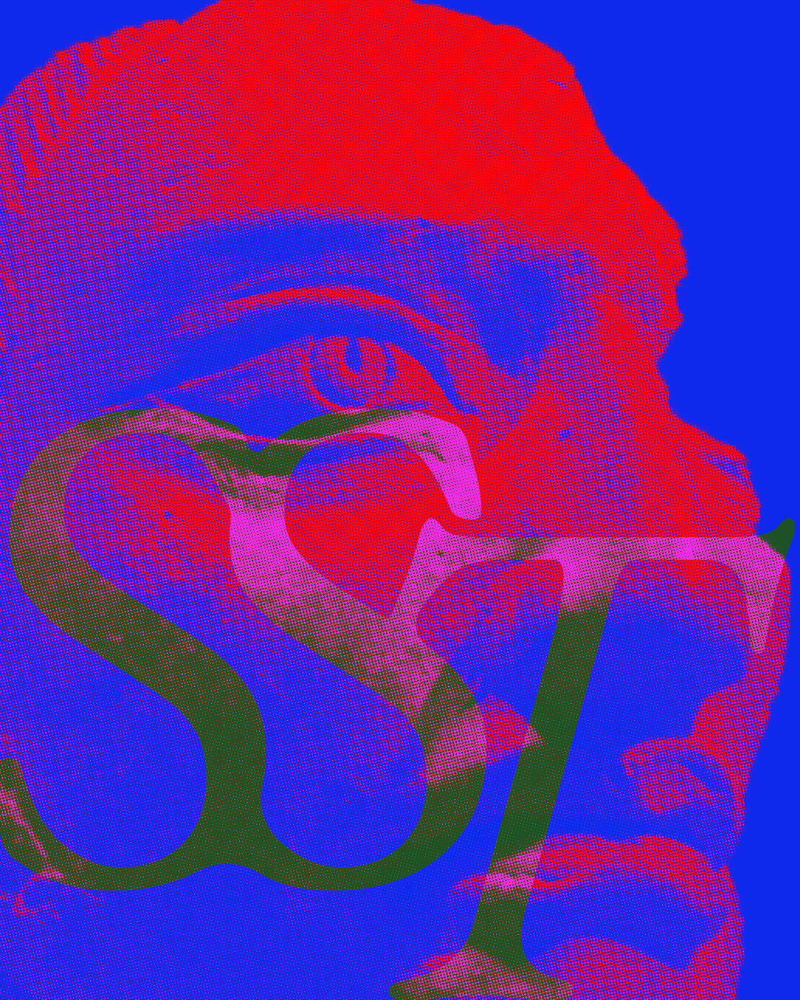
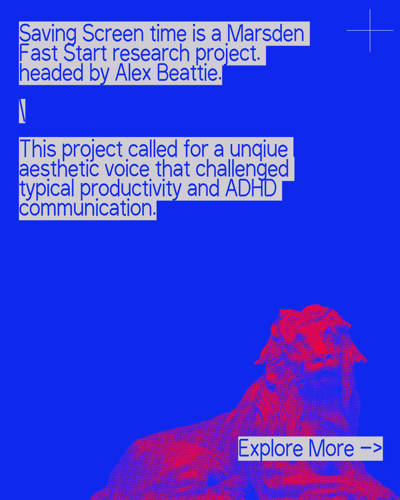
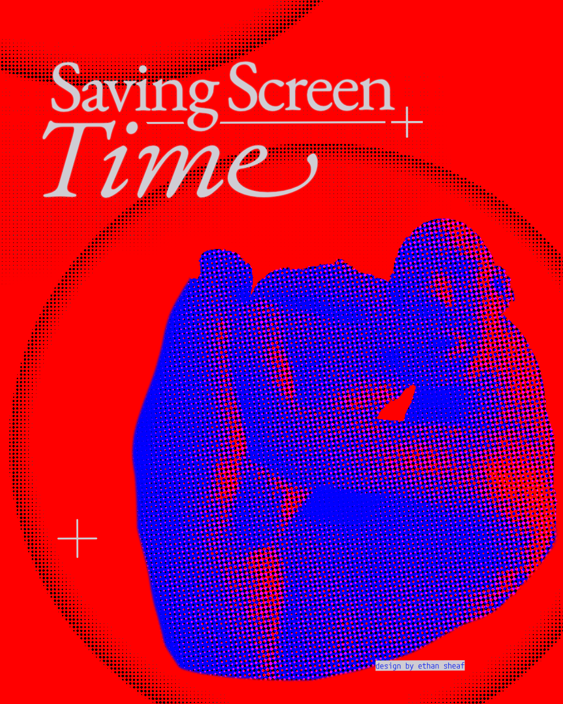
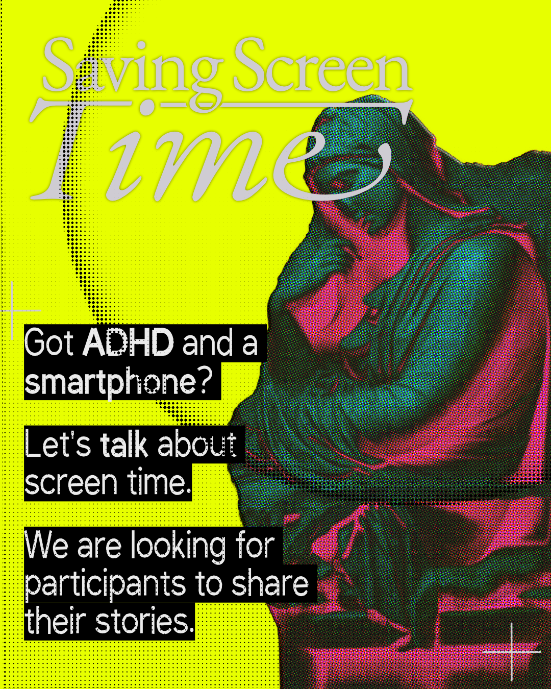
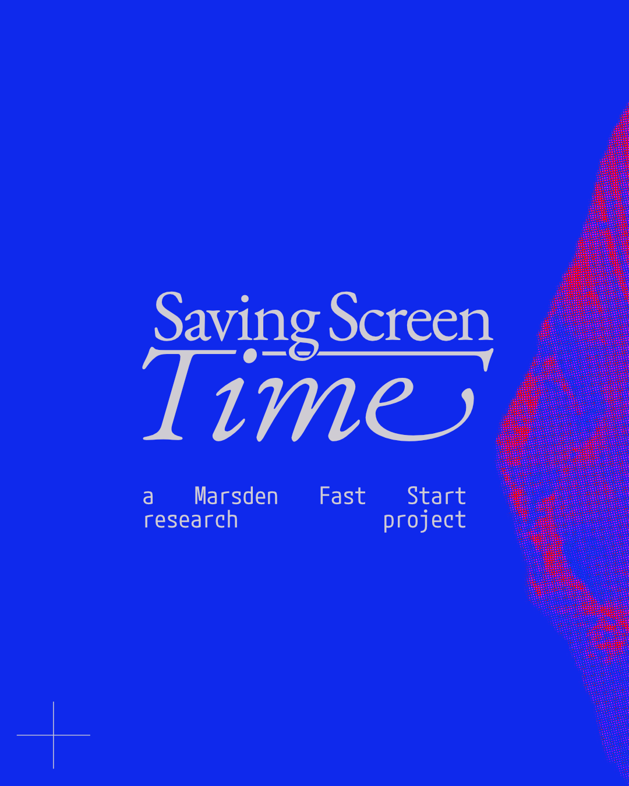
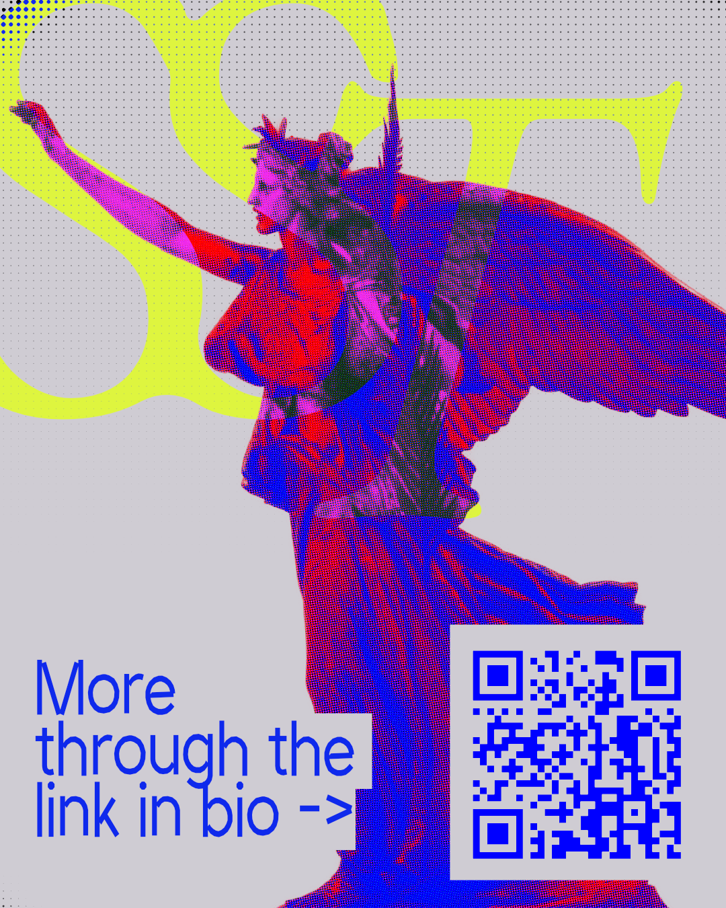

Overview
Saving Screen Time is a Marsden Fast Start research project that investigates the diverse ways people experience the internet, with a specific focus on individuals with ADHD. The study challenges the prevailing assumption that taking a break from the internet provides universal benefits. By applying disability studies and the theoretical framework of "crip time", the research critiques the ableist norms surrounding productivity and what society deems "healthy" disconnection.
Ultimately, the project posits that people with ADHD are early indicators of how minds navigate a stimulus-rich world, offering crucial insights into the future of human attention.

Approach
As the designer for the project, the role centred on translating dense, critical academic research into an accessible and engaging digital experience. This involved designing and building the project's digital presence from the ground up, including structuring the navigation across vital sections such as publications, team profiles, and the active study portal. The layout ensures that complex theoretical frameworks remain legible and approachable for a broader public audience.

Competencies
- Visual Identity and Brand Development: Established the overarching visual language for the research initiative, including a custom logo and distinct visual assets that communicate abstract concepts like cognitive difference and temporal shifts.
- Web Design and User Interface (UI): Designed and built the project's digital presence from the ground up, structuring navigation across publications, team profiles, and the active study portal.
- Information Architecture: Organised the research narrative to clearly introduce theoretical concepts like crip time, guiding visitors through the project's core arguments.
- Visual Communication: Produced bespoke graphics aligned with the critical, academic tone of the research, delivering a thoughtful aesthetic that respects the project's focus on neurodivergence and accessible design.
Gallery



